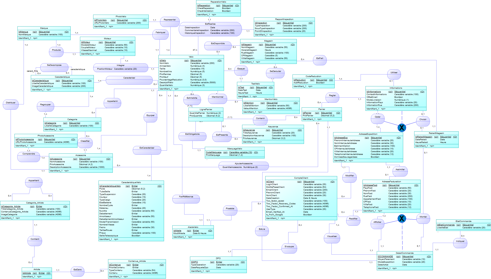
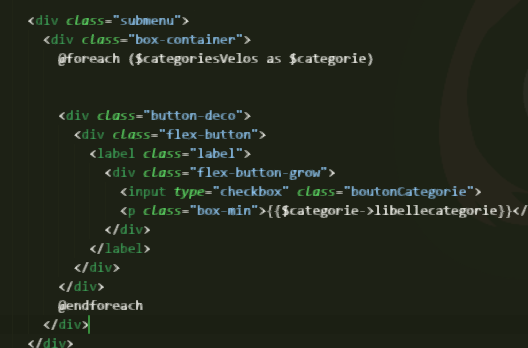
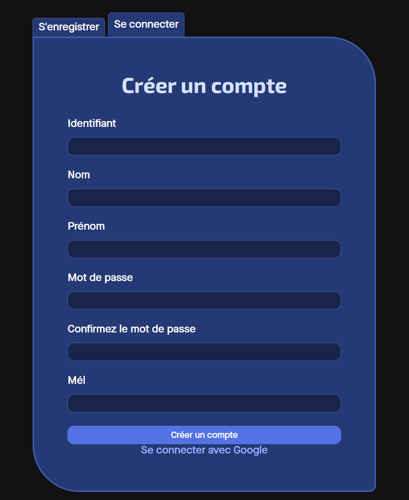

Durant ma 2ème année de BUT Informatique, j'ai eu l'opportunité de mettre en place mon apprentissage dans un groupe de 5 étudiants dans la conception et le développement d'un site e-commerce de vente de vélos électriques d'occasion pour le client fictif Upway
Durant la conception de l'application, nous avons réalisé la base de données du site à partir des documents fournis par le client. Nous avons structuré la base de données pour éviter les doublons, faciliter les requêtes et les performances de la base.
La base de données a été optimiser au plus possible en fonction des contraintes du client
Les données ne sont accessible que par le code, l'accès à la base de données et au code sont restreints par des mots de passe hashé et sécurisé.

Les données sont visualisé par l’utilisateur à travers des vues dynamiques, permettant une consultation claire et structurée. Des mécanismes de filtrage (marques, type de vélo, prix, ...) et de tri (pertiance, récent, ...) facilitent la recherche d’informations pertinentes. Une pagination a été mis en place pour ne pas se perdre dans les vélos

L’application manipule différents types de données provenant de sources variées, telles que les entrées utilisateur et la base de données. Les données de la base de données bien sur utiliser pour présenter les différents articles mais aussi les commandes client et les clients tout simplement. Les entrées utilisateurs peuvent être variées, la création d'un compte client, la commande d'un client qui seront stocker dans la base de données. Il y a également les ajouts/suppressions de produit par les administrateur du client.
